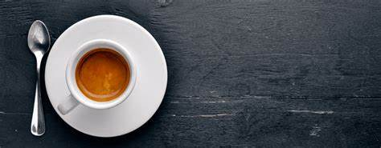

About Espresso
Espresso is a concentrated coffee brewed by forcing a small amount of nearly boiling water through finely-ground coffee beans. It's the base for many popular coffee drinks.

Ways of Preparation
Espresso can be prepared in various ways, including:
- Single Shot: 1 ounce of espresso
- Double Shot: 2 ounces of espresso
- Affogato: Espresso poured over a scoop of vanilla ice cream
Calories in Espresso
The table below shows the approximate calories in espresso based on the number of spoons of sugar added:
| Spoons of Sugar | Calories |
|---|---|
| 0 | 2 (for a standard single shot) |
| 1 | 16 |
| 2 | 30 |